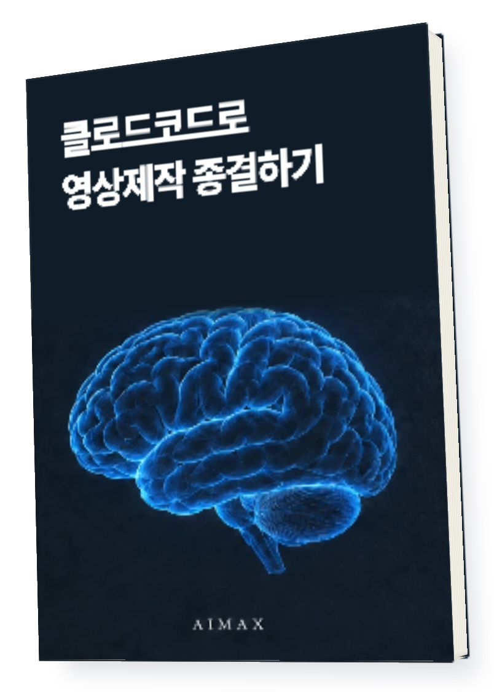
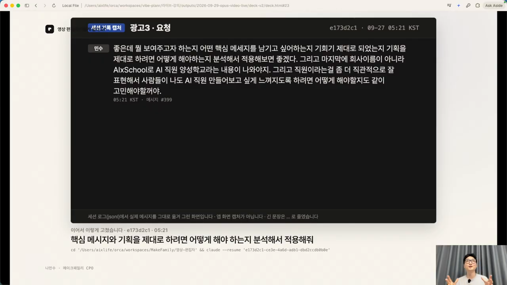
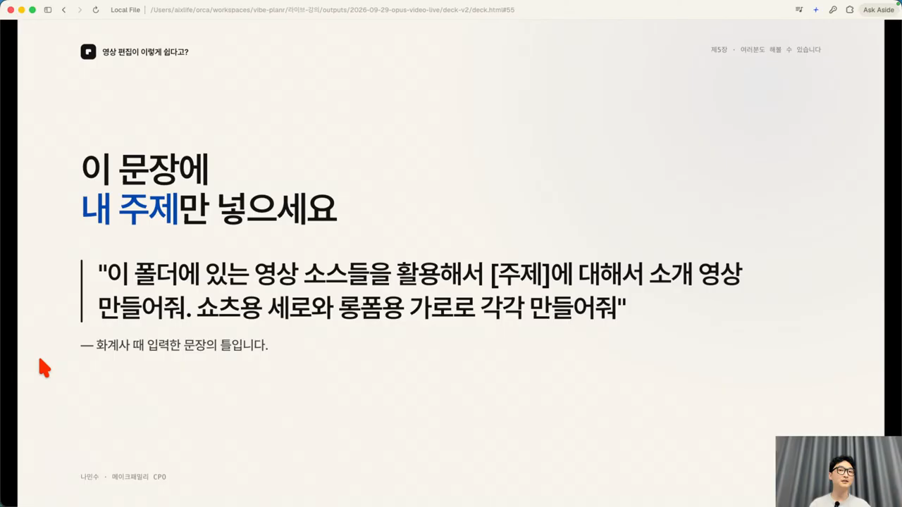
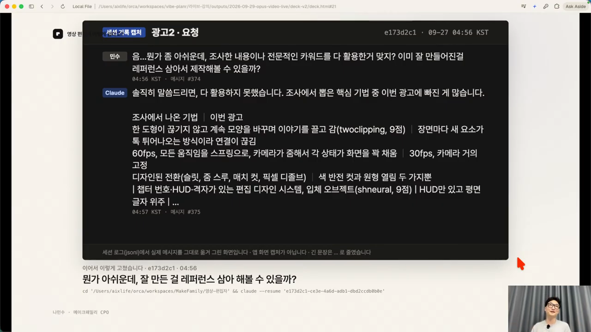
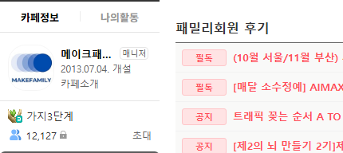

촬영한 파일은 있는데
AI에게 맡기는 순서가 막막하다면
기획부터 완성까지
AI 영상 제작법

책을 읽고 내 작업에 적용하는 가이드
AIMAX · 메이크패밀리 운영사
직접 팔아온 경험을
실전의 기준으로
메이크프렌즈 누적 매출
114.9억원
2021.01 — 2024.04
(주)메이크프렌즈 전체 매출 · 월별 원장 40개월 합산
각 막대는 2021년 1월부터 해당 시점까지의 누적액
이 가이드가 다루는 것은
내 재료로 시작해
한 가지씩 고칩니다.
목적과
재료소스
폴더제작
지시수정과
검수
재료소스
폴더제작
지시수정과
검수
2026년 9월 29일 라이브에서 설명한
영상 제작 과정을 따라가는 PDF입니다.
무엇을 보여줄지
먼저 정하세요.
내 작업에 맞게 채우는 기획 메모
보여줄 장면남길 메시지
쓰고 싶은 사진과 영상

PDF에 실린 라이브 설명 화면
참고할 영상과
쓸 영상은 따로.
📁 이번 소개 영상
01_제작에 쓸 영상과 사진
02_참고할 레퍼런스
03_순서와 주의사항 메모
파일에 순서를 표시하고
말실수나 빼야 할 장면을 짚어 주세요.
AI가 실제로 열 수 있는 경로도 확인합니다.
목적·소스·형식을
한 문단에 담아보세요.

지시할 때 확인할 항목
어떤 내용을 소개하는지어느 폴더의 재료를 쓰는지
세로인지 가로인지
원하는 분위기가 무엇인지
원하는 스타일을 고르기 어렵다면
후보를 받아 비교하는 방법도 다룹니다.
아쉽다는 말 대신
바꿀 곳을 짚으세요.

뭔가 아쉬워. 다시 만들어줘.이 부분은 유지하고
빠진 내용을 넣어줘.
빠진 내용을 넣어줘.
첫 결과에서 유지할 점과 바꿀 점을 나누고
한 가지씩 확인하며 수정합니다.
파일이 생겼다면
재생하며 확인하세요.
장면전달한 소스가 맞는지쓰지 말라고 한 부분은 빠졌는지.
내용남길 메시지가 보이는지조사한 내용이 실제로 반영됐는지.
완성요청한 형식으로 열리는지자막·소리·화면을 끝까지 확인했는지.
메이크패밀리 · 네이버 카페
함께 사업을 고민하는
사람들이 모였습니다.
12,127명
네이버 카페 회원 수

AI로 1시간에 영상 300개 만드는법
내 작업에 꺼내 쓰세요.
- 2026.09.29 라이브 따라하기 PDF
- 목적·재료·폴더·제작 지시·피드백 과정
30,000원
지금 받기 →결제하면 PDF가 이메일로 옵니다.
같은 이메일로 라운지에 로그인하면
구매한 파일을 다시 받을 수 있습니다.
시작하기 전에
Q.
영상 파일을 대신 만들어 주나요?
완성 대행 상품이 아닙니다. 내가 준비한 재료를 AI에 전달하고 결과를 확인하는 방법을 읽고 따라 하는 PDF입니다.
Q.
도구 구독료도 포함인가요?
도구 구독이나 생성 비용은 포함되지 않습니다. 사용하려는 도구의 요금과 작업 조건을 별도로 확인해 주세요.
Q.
제작 속도나 결과가 모두 같나요?
소스와 영상 길이, 도구 환경, 수정 범위에 따라 달라집니다. 상품명의 수치를 개인별 제작 결과로 보장하지 않습니다.
이용 안내
화면은 PDF 원문에 포함된 라이브 설명 장면입니다. 책 표지·판매 제목과 PDF 내부 제목의 표기가 다를 수 있습니다. 도구 화면과 이용 조건은 책 제작 시점 이후 달라질 수 있습니다. AI가 제작한 결과는 사람이 재생하고 확인한 뒤 사용해 주세요.